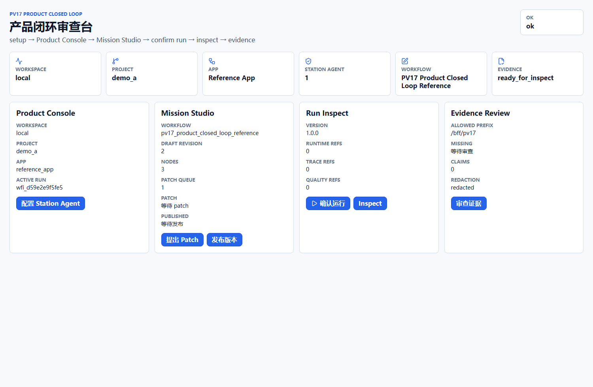
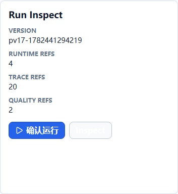
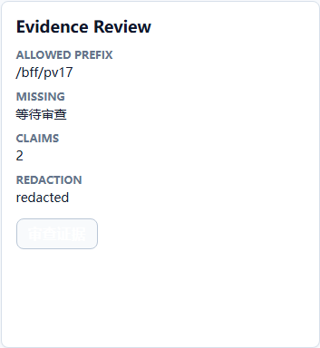

HarnessOS PV17 阶段性审计与自动化验收报告
本报告基于原始 PRD、目标架构、当前代码、自动化测试、headless 浏览器端到端路径和证据包生成，用于判断 PV17 Product Closed Loop 是否达到受限评审出门条件。
一、阶段性验收摘要
代码检视
PV17 正向路径使用正式 /bff/pv17/* 路由，覆盖 Product Console、Station Agent mutation、Workflow patch/publish、runtime inspect 和 evidence summary。
文档审计
PRD、目标架构、验收门槛、里程碑、gap drawio 和报告已从“待实现评审”更新为“bounded review 已通过，保留历史文档 gate 作为审计追溯”。
功能检查
用户路径覆盖 setup、Product Console、Mission Studio、确认运行、运行检查和证据审查，acceptance runner 最终状态为 PASS。
二、自动化验收结果
| 检查项 | 命令或数据源 | 结果 | 审计说明 |
|---|---|---|---|
| 后端核心与 PV17 pytest | .venv/bin/python -m pytest ... test_pv17_*.py |
30 passed | 覆盖 API runs、CLI headless、pack registry、pack assembly、PV17 BFF 和 acceptance runner 单测。 |
| 前端单元与客户端边界 | node --test dist-test/__tests__/*.test.js |
79 passed | 包含 PV17 client formal BFF route only 检查，以及既有阶段 No False Green 用例。 |
| 前端类型检查与构建 | tsc + vite build |
PASS | 构建成功；Vite 仅提示 chunk 大小警告，不影响本阶段验收结论。 |
| PV17 headless 浏览器 E2E | tools/pv17/run_product_closed_loop_e2e.py |
PASS | 使用 headless Chrome/CDP，不弹出可见浏览器；刷新截图、网络日志、BFF 路由日志和证据 JSON。 |
| PV17 acceptance runner | tools/pv17/run_product_closed_loop_acceptance.py |
PASS | 缺失证据为 0；schema、stage、browser boundary、BFF boundary、DTO coverage、redaction 和 claim scan 全部 PASS。 |
| 工作树格式检查 | git diff --check |
PASS | 未发现 trailing whitespace 或 patch 格式问题。 |
三、目标架构与当前实现
目标架构
统一呈现 workspace、project、app、workflow、Station Agent 和 system health。
WorkflowDiff/patch round-trip，publish/run 必须由用户确认。
浏览器只访问正式 /bff/pv17/*；禁止直连 runtime/internal/debug route。
运行后可检查 workflow instance、StationRun、trace、artifact、quality、approval 和 claim-to-evidence。
PV17 证明 bounded product closed loop，不证明生产部署、多租户、完整 Agent executor 或 Xpert parity。
当前代码实现
apps/api/routers/bff.py
提供 /bff/pv17/system/health、/product-console/state、/entities/station-agents、/studio/workflows/*、/runtime/*、/evidence/*。
apps/workflow-console/src/ui/pv17/
提供 PV17 Product Closed Loop UI，支持真实用户路径截图验收。
apps/workflow-console/e2e/pv17_cdp_acceptance.mjs
通过 CDP 执行真实页面操作，采集网络请求并生成 3 张路径截图。
tools/pv17/
包含 reference seed、formal BFF server、E2E runner 和 acceptance runner。
不允许把 PV17 证据解释为 production ready、complete Workflow Studio ready 或 Agent executor ready。
四、用户场景体验路径
用户打开 PV17 页面，看到 workspace/project/app/workflow、Station Agent 和健康状态。
用户提交 Agent 配置，BFF 返回 audit refs，同时保留拒绝路径证据。
用户创建 patch proposal，并在明确确认后发布 WorkflowVersion。
用户确认 run 后查看 runtime inspect、trace refs、artifact refs、quality refs 和 approval refs。
用户看到 claim-to-evidence、route boundary、artifact lineage 和 redaction 结果。
五、截图证据



六、边界与审查结论
| 审查维度 | 结论 | 证据 |
|---|---|---|
| 浏览器网络边界 | PASS | browser-network-log.json 中 forbidden route scan 为空，只出现 Vite 静态资源和 /bff/pv17/* 正向路径。 |
| BFF 边界 | PASS | bff-route-log.json 显示 uses_pv17=true，uses_pv16_positive_path=false。 |
| DTO 覆盖 | PASS | dto-snapshots.json 覆盖 S1-S5，包含 schema version。 |
| PRD 规格检视 | PASS | prd-spec-review.md 记录 Product Console、entity mutation、Studio versioning、runtime inspect 和 evidence review 的对照结果。 |
| 目标架构检视 | PASS | target-architecture-review.md 记录目标架构层与当前代码实体的对应关系。 |
| No False Green | PASS | no-false-green-scan.txt 和 acceptance report 均无 forbidden positive claim 命中。 |
| Redaction | PASS | redaction-scan.txt 无 raw secret、raw provider payload 或 raw artifact content 泄露。 |
七、剩余风险
非阻塞风险
- Vite build 仍有 chunk size warning，影响性能优化判断，但不阻断 PV17 bounded review。
- pytest 输出中存在 Starlette/Pydantic deprecation warnings，属于依赖迁移风险，不是本阶段功能失败。
- 一次并发顺序预检在 E2E 证据生成前运行 acceptance runner，因证据缺失失败；顺序重跑后已 PASS，最终结论以后者为准。
不能外推的能力
- 不能宣称生产可用、多租户生产安全、完整部署运维闭环。
- 不能宣称完整 Workflow Studio 或 Agent executor 已完成。
- 不能宣称 Xpert parity 或产品级前端全部完成。
八、关键审计入口
| 文件 | 用途 |
|---|---|
docs/design/V12-V15.x/pv17_product_closed_loop_prd.md |
PV17 规格来源。 |
docs/design/V12-V15.x/pv17_product_closed_loop_target_architecture.md |
PV17 目标架构与代码实体映射。 |
docs/design/V12-V15.x/reports/pv17_product_closed_loop_acceptance_report.json |
机器可读最终验收报告。 |
docs/design/V12-V15.x/evidence/pv17-product-closed-loop/ |
截图、网络日志、DTO 快照、claim matrix、PRD/架构 review 和 audit closure。 |
tools/pv17/run_product_closed_loop_acceptance.py |
可重复执行的阶段验收 runner。 |